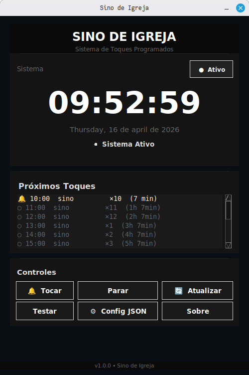
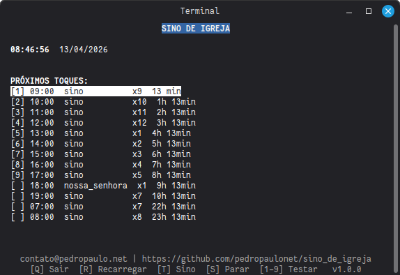

Programa para tocar sinos em horários programados, ideal para igrejas e Raspberry Pi.
Interface Gráfica (Tkinter):

Interface Terminal (curses):

Pré-requisitos:
Se pygame não estiver disponível, o programa usa automaticamente: ffplay (ffmpeg), paplay (PulseAudio), aplay (ALSA) ou omxplayer (Raspberry Pi).
| Tecla | Ação |
|---|---|
Q | Sair do programa |
R | Recarregar configuração do config.json |
T | Testar o som do sino (uma vez) |
S | Parar o som que está tocando |
ESPAÇO | Forçar toque do sino 3 vezes |
1-9 | Testar um horário específico da lista |
A interface gráfica possui botões na tela:
| Botão | Ação |
|---|---|
| Ativo/Inativo | Liga ou desliga o sistema de toques automáticos |
| Tocar | Toca o sino principal (3 vezes) |
| Parar | Para o som que está tocando |
| Atualizar | Recarrega o config.json |
| Testar | Abre janela para testar sons individualmente |
| Config JSON | Abre o arquivo de configuração no editor padrão |
| Sobre | Abre janela com informações do programa |
Edite o arquivo config.json para configurar horários e sons. Exemplo mínimo:
{
"sons": {
"sino": "sounds/sino.mp3",
"nossa_senhora": "sounds/nossa_senhora.mp3"
},
"programacao": [
{"hora": 7, "minuto": 0, "som": "sino", "repeticoes": 7},
{"hora": 19, "minuto": 0, "som": "nossa_senhora", "repeticoes": 1}
]
}
sounds/.sons.ou
ou
sino.bash/
├── sino_igreja.py # Programa principal (interface terminal/curses)
├── sino_igreja_gui.py # Interface gráfica (Tkinter)
├── sino_igreja.sh # Script para interface terminal
├── sino_igreja_gui.sh # Script para interface gráfica
├── config.json # Configuração
├── requirements.txt # Dependências Python
└── sounds/ # Arquivos de áudio
├── sino.mp3
└── nossa_senhora.mp3